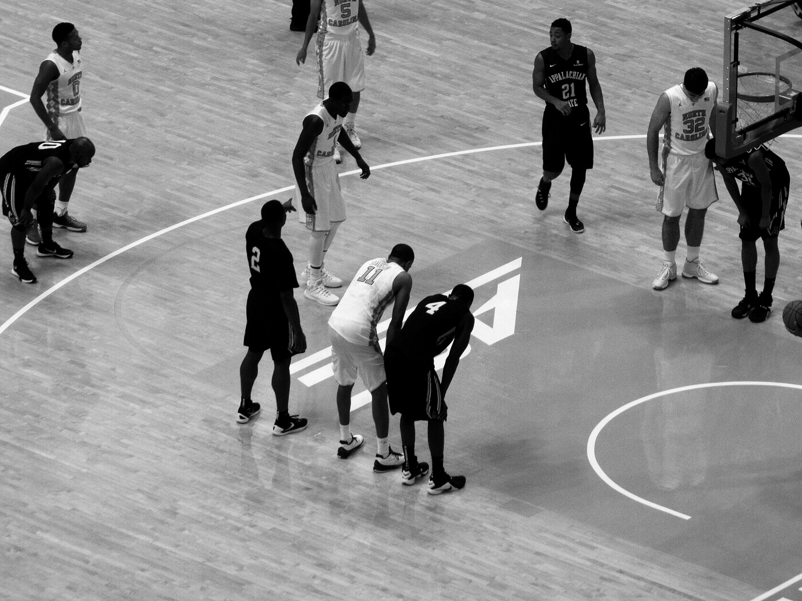

FOTO: UNIVERSITY OF NORTH CAROLINA · DOMINIO PÚBLICO (H. 1973)

CHAPEL HILL
PABELLÓN DEAN SMITH, 2015 · FOTO: JACKPAYLOR · CC BY-SA 4.0 (MODIFICADA)
1961–1997 · 36 TEMPORADAS
PISTA, FICHAS Y MANO: DIBUJO
LIBRETA · CASTIGOS
RECREACIÓN
SIN CASTIGO
EN EL BANQUILLO · 1967
FOTO: JOCK LAUTERER / THE DAILY TAR HEEL · DOMINIO PÚBLICO
RELOJ: DIBUJO
BANQUILLO Y MANOS: DIBUJO
Fotos: University of North Carolina (dominio público) · Jackpaylor (CC BY-SA 4.0, modificada) · Jock Lauterer / The Daily Tar Heel (dominio público), vía Wikimedia Commons. Pista, mano, libreta, reloj y banquillo: recreación.